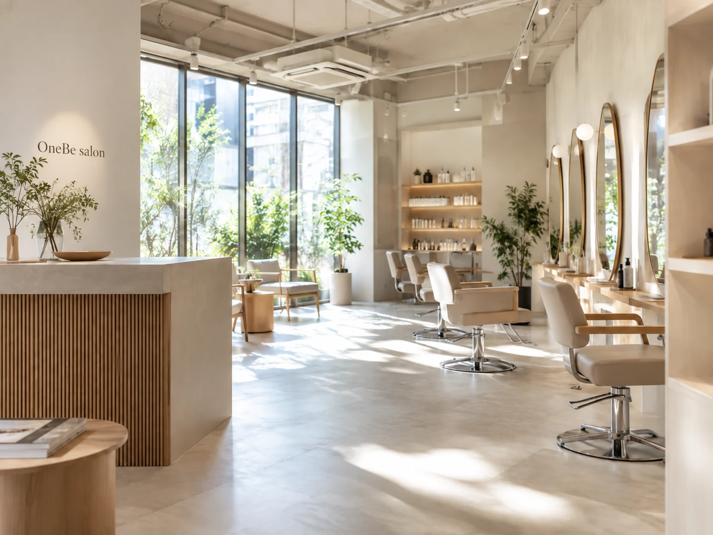
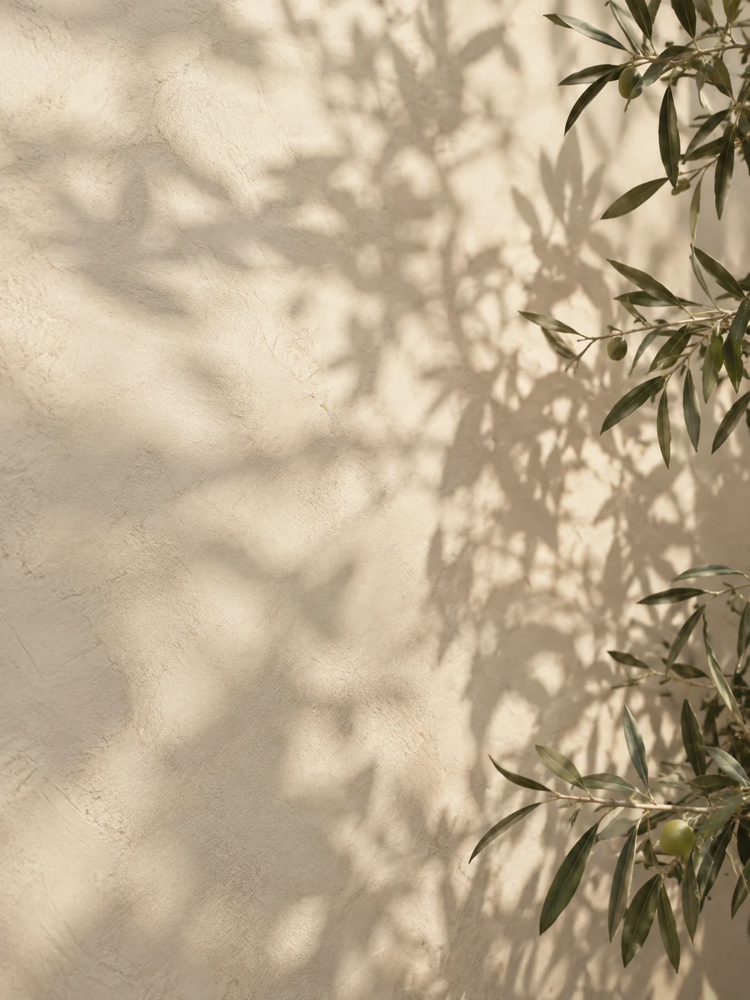
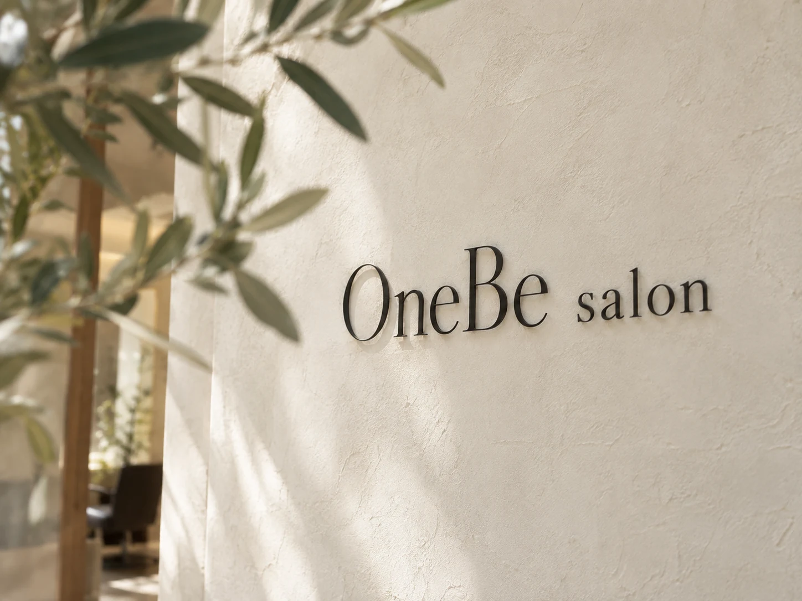

髪が整うと、
わたしが整う。
日常に、
やさしい余白をつくる場所。
HAIR
LIFE
FOR A CALMER YOU

美しさは、
暮らしのなかにある。

OneBe salon
髪を通して、
わたしらしい毎日をつくる。
A MORE YOU.
A BRIGHTER TOMORROW.
OUR CONCEPT
美しさは、
生き方の一部。
OneBe salonは、髪を整えるだけでなく、
毎日を少しやさしく、心地よくするための場所です。
丁寧なカウンセリングと、上質な空間で
あなたらしい美しさを引き出します。
BEAUTY
LIVES
IN
YOUR
DAILY LIFE

A QUIET PLACE
FOR A BRIGHTER YOU
RESERVATION
美しい日常は、
ここからはじまる。
ご予約・お問い合わせは
こちらから。
ONE BE
A BRIGHTER
YOU